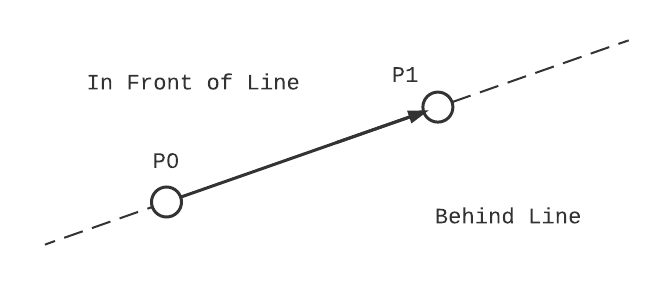

2D Binary Spacing Partitioning with Python and NetworkX
I'm a sucker for tricks programmers use to get games to run efficiently, from the metro train in Fall Out 3 that's actually a piece of armor, to the spell casting bunnies in World of Warcraft that triggered world events. In a slightly different camp, however, are tricks that enabled game makers to do the impossible with the hardware they're given, and one name that's constantly tied to these feats is John Carmack, cofounder of id software and pioneer of 3D computer games. His use of ray casting for Wolfenstein 3D and the fast inverse square root algorithm alone are topics worthy of their own posts, but today I'm going to focus on the algorithm he used to enable real-time 3D level rendering in the original Doom: binary space partitioning (BSP).
Carmack's vision for Doom was to have maps with varying heights, zone-specific lighting, and non-orthogonal walls. Unfortunately, the ray casting algorithm used in id's previous game, Wolfenstein 3D, couldn't render such complex scenes, so he was left looking for a new solution. David Kushner's Masters of Doom, as well as this post on twobithistory have already covered this story wonderfully, so I won't go into excessive detail but instead focus on the solution. By representing levels as binary trees of line segments, the rendering engine could quickly decide which surfaces to draw and in what order. Despite being incredibly curious when I first read Masters of Doom, I wasn't working on anything related to computer graphics at the time, and filed BSP trees off for something to look at another day.
Fast forward to now: I'm trying to incorporate OpenGL rendering into my ray tracer, which requires constructive solid geometry performed on polygonal meshes. Turns out binary space partitioning is a core part of this algorithm too, so it's finally time to dive in and learn how to create and use BSP trees!
Contents
Quick Links
What's So Special About Binary Space?
Binary space partitioning divides an n-dimensional space into segments that are entirely in front or behind a dividing hyperplane. For now we'll focus on the 2D case, which means the partition splits a group of line segments into sets that are either in front, behind, or colinear to a dividing line. Repeatedly performing this partitioning on the resulting sets creates a binary tree, where every node contains a dividing line and all colinear segments, and each edge connects to a child node whose segments are completely in front or behind the current node.
Construction of a BSP tree by repeatedly subdividing a collection of surfaces. Edges labeled + are in front of the previous node, and - are behind.
The most popular use for BSP trees is for visible surface determination in computer graphics, notably for the painter's algorithm. As the painter's algorithm draws the entire set of surfaces from back to front, it needs to be able to quickly sort the surfaces from any viewpoint. BSP trees allow for the computationally expensive sorting to happen just once. When the scene needs to be rendered the tree is traversed in linear time from the current viewpoint and a sorted list of surfaces is generated. It's worth noting this only works for static surfaces, which made it ideal for rendering Doom's level maps. As soon as an individual surface is transformed, however, the entire tree needs to be regenerated.
A less famous use of BSP trees is performing constructive solid geometry (CSG) operations on discrete polygonal meshes. This application uses two separate BSP trees, one for each object the operations are being applied to. The trees are then 'projected' onto each other, resulting in a set of surfaces from one object that are entirely in the other. Depending on the operation (union, intersection, or difference), certain surfaces are discarded, and the remaining ones make up the new shape. The actual CSG algorithm is beyond the scope of this post, but the documentation and code for the csg.js library provides a basic explanation.
Creating a BSP Tree
In addition to the standard library, we'll use Numpy to calculate the line-segment intersections, and NetworkX to create the tree. NetworkX is a general purpose graph library that prevents us from having to define our own nodes and edges, and includes extensive traversal algorithms and visualization features. Both packages are installable via pip.
py -m pip install numpy, networkx
The BSP algorithm
Below are the steps we'll be implementing to create our tree. Given a set of 2D line segments and a dividing line:
Calculate the intersection of the dividing line with all segments.
Split any segments that intersect the dividing line into two segments at the intersection.
Add colinear line segments to the current node of the tree.
Create a new child node and repeat steps 1-6 for all segments in front of the dividing line.
Create a new child node and repeat steps 1-6 for all segments behind the dividing line.
Connect the new nodes to the current node with an edge.
Since tree generation is a recursive process, steps 4 and 5 repeat every step up to and including themselves until every line segment can be described as colinear to a node. Also, the number of segments in the returned tree may drastically exceed the number of segments in the original set, depending on how many are bisected at each iteration. We'll break the algorithm down into two pieces: the code used to intersect and split a set of segments with a dividing line, and the recursive function that builds the tree.
Bisecting a Line
The bulk of the processing is determining where each line segment in a set intersects the dividing line. We'll make a function called bisect that accepts an array of line segments and a dividing line, and returns three arrays, one each for segments ahead, behind, and colinear to the dividing line.
def bisect(segments: np.ndarray, line: np.ndarray) -> Tuple[np.ndarray, np.ndarray, np.ndarray]: # separates a set of line segments based on where they intercept a dividing line
The segments array is an Nx2x2 array, where N is the number of segments being sorted. Each row of the array is a set of two xy-pairs representing the start and endpoints of the segment. For example, a square centered at the origin is composed of four segments:
square = np.ndarray([ [[1,-1],[-1,-1]], [[-1,-1],[-1,1]], [[-1,1],[1,1]], [[1,1],[1,-1]] ])
Similarly, a line is represented by a single 2x2 array of two XY-pairs. The advantage of using Numpy data structures instead of Python lists and tuples is that we can apply the intersection algorithm to the entire segment array at once, instead of iterating over each segment with a for loop. Since Numpy calls compiled C-code, there is almost always a performance gain when a loop can be replaced with array operations.
The last decision we need to make before writing the bisect function is coming up with a consistent definition for what "in front" and "behind" mean in the context of our lines. An easy enough way to visualize it is this: If you take your right hand and orient it so that the pad of your hand is on top of the first point of the line, and your fingers point towards the second, everything on the left side of your hand (closest to the palm) is in front of the line, and everything on the right side (closes to the back of your hand) is behind the line. Later we'll define this more formally with projections onto a normal vector of the line. If the concept of a vector projection is new, I recommend reading up on dot and cross-products, or skipping straight to the implementation.
Intersecting Two Lines
To calculate the intercepts we'll describe the lines and segments as vectors with one independent variable.
Since segments have a defined start and end, t is valid over a closed range \(t \in [0,1]\). Lines on the other hand extend infinitely in all directions, so t can be any real number. For convenience I'm going to refer to our line segments as \(\vec{g}(t) = \vec{p_0} + \vec{v}_0t\), and the dividing line as \(l(s) = \vec{p}_1 + \vec{v}_1 s\). We're interested in the value t where the two lines meet.
intersection point shown in red
I've skipped a few steps in the above equation because the intercept of two vector equations is well understood. What we're more interested in is using the results to determine where the segments lie with respect to our line.
Red flags might be going off because this equation is dividing two vectors, which is (1) an invalid operation and (2) can't result in a scaler. Since our lines and segments are all 2D, however, we're going to use the 2D definition of cross product: \(\vec{A} \times \vec{B} = A_x*B_y-A_y*B_x\). This scaler is the z-component of the cross product vector we would have gotten had we taken a traditional 3D cross-product and set the z-values to zero for \(\vec{A}\) & \(\vec{B}\).
Ahead, Behind, Bisected or Colinear
It's easy to tell that the line bisects a given segment when the t is between 0 and 1. What about the other cases though: how do we determine if the segment is in front or behind the line, and what about cases where t is undefined? To get more insight into what's happening with the intersection equation, we'll look at the numerator and denominator separately.
- Numerator
-
We already defined the two-dimensional vector cross product: \(\vec{A} \times \vec{B} = A_x*B_y-A_y*B_x\). Taking a closer look, it's identical to \((A_x, A_y) \cdot (B_y, -B_x)\), and \((B_y, -B_x)\) is the same as rotating \((B_x,B_y)\) clockwise 90 degrees, aka it's proportional to the unit normal vector of the dividing line. The numerator can be rewritten as:
\begin{equation*} ((\vec{p}_0-\vec{p}_1) \cdot \hat{n})|\vec{v}_1| \end{equation*}Meaning the numerator is taking the distance between a point on the segment and a point on the line, and projecting that vector onto the normal vector of the line (this is identical to calculating the shortest distance between a point and a line). From our definition of "in front" and "behind", we can claim that a line segment is partially in front of the line if the numerator is > 0, and partially behind if the numerator is < 0. If the numerator is equal to zero, it means the first point of the segment is on the line, and we need to look at the denominator to define whether it's in front or behind.
- Denominator
-
Using the same logic as above, the denominator can be rewritten as a vector projection onto the normal vector:
\begin{equation*} -(\vec{v}_0 \cdot \hat{n})|\vec{v}_1| \end{equation*}This projection is a measure of how far \(\vec{g}(t)\) travels towards line \(\vec{l}(s)\) per interval t. Since the numerator is how far the lines are apart (projected onto the normal vector), and the denominator is how fast one line is approaching the second along that same normal, it makes sense that the ratio is the amount of time (t) until they intersect!
If the denominator is equal to zero, the two lines are parallel, and the sign of the numerator determines where the segment lies relative to the line.
With the exception of cases where t is between 0 & 1, the numerator and denominator must be considered when defining the segments location. A summary of all cases is given below.
t |
Numerator |
Denominator |
Line Segment Location |
|---|---|---|---|
0 < t < 1 |
- |
- |
Bisected by line |
t > 0 or t < 1 |
> 0 |
- |
In front of line |
t > 0 or t < 1 |
<0 |
- |
Behind line |
t = 0 |
- |
< 0 |
In front of line |
t = 0 |
- |
> 0 |
Behind line |
- |
= 0 |
= 0 |
Colinear |
Putting it Into a Function
Cases in hand we're ready to implement the first half of our bisect function!
def bisect(segments: np.ndarray, line: np.ndarray): segment_start = segments[..., 0, :] segment_end = segments[..., 1, :] v0 = segment_end - segment_start v1 = line[1] - line[0] # need to solve for the intersection equation, first find the numerator and denominator numerator = np.cross((line[0] - segment_start), v1) denominator = np.cross(v0, v1) # if the denominator is zero the lines are parallel parallel = np.isclose(denominator, 0) not_parallel = np.logical_not(parallel) # the intersection time is the point along the line segment where the line bisects it intersection = numerator / (denominator + parallel) ahead = np.logical_or(numerator > 0, np.logical_and(np.isclose(numerator, 0), denominator < 0)) behind = np.logical_or(numerator < 0, np.logical_and(np.isclose(numerator, 0), denominator > 0)) # segments are colinear if they are parallel and the numerator is zero colinear = np.logical_and(parallel, np.isclose(numerator, 0)) # bisected segments are segments that aren't parallel and t is in (0,1) bisected = np.logical_and( not_parallel, np.logical_and(intersection > 0, intersection < 1) )
Right now all it does is build a set of boolean masks used to index the segment array. Before returning the new segments we need to write some code to split bisected segments into two new segments. Notice how when calculating t the denominator has an extra component parallel. This boolean value is cast as a 1 if the denominator would have been zero, and prevents Numpy from throwing a warning about divide by zero errors.
Handling Bisected Lines
If a segment is bisected by the line at time t, we need to create two new segments, one from 0-t, and a second from t-1. Fancy indexing with Numpy can be slower than doing simple operations on an entire array (this is highly dependent on the application), so we'll create two new segments for every segment and then filter.
intersection_points = segment_start + intersection[..., np.newaxis] * v0 l_segments = np.stack((segments[..., 0, :], intersection_points), axis=1) r_segments = np.stack((intersection_points, segments[..., 1, :]), axis=1)
Notice how they're split into left and right segments, not 'in front' and 'behind'. That's because right now we don't know which segments are which, and need to filter them based on the numerator. If the numerator is >0, the first point of the segment is ahead of the line, making l_segment ahead and r_segment behind.
mask = numerator[..., np.newaxis, np.newaxis] > 0 bisected_ahead = np.where(mask, l_segments, r_segments)[bisected] bisected_behind = np.where(np.logical_not(mask), l_segments, r_segments)[bisected]
An example of two segments where the left and right splits are on opposite sides of the dividing line
Once the bisected segments have been split, all that's left to do is combine them with their respective ahead/behind sets, and return the three sets of segments. The full function is found here, with a set of if statements to catch cases where ahead/behind sets are empty arrays. The Tuple Typehint is from the typing module, and is useful for IDE's to infer what types the function will return.
Recursively Building the Tree
Compared to the amount of code required to partition our line segments, the function build the BSP tree is relatively simple.
def build_tree(segments: np.ndarray, starting_segment: np.ndarray = None) -> nx.DiGraph: def bsp_helper(segments: np.ndarray, division_line: np.ndarray): ahead, behind, colinear = bisect(segments, division_line) # get the bisected segments node_id = id(division_line) # make your line hashable so it's usable as a node graph.add_node(node_id, line=division_line, colinear_segments=colinear) # add the node to the graph if behind.size != 0: # if there's any elements behind node_behind = bsp_helper(behind, behind[0]) # recursively call for all segments behind graph.add_edge(node_id, node_behind, position=-1) # add an edge from this node to the behind node if ahead.size != 0: node_ahead = bsp_helper(ahead, ahead[0]) # recursively call for all segments in front graph.add_edge(node_id, node_ahead, position=1) # add an edge from this node to the front node return node_id # return the hashed id graph = nx.DiGraph() # make a new directed graph if starting_segment is None: starting_segment = segments[0] # run the recursive helper function, which should add all nodes and edges bsp_helper(segments, starting_segment) return nx.relabel.convert_node_labels_to_integers(graph)
Let's pick it apart, starting with the function signature. The function expects a nx2x2 array of line segments, and an optional starting segment that it used as the first dividing line. The output will be a NetworkX directed graph object where every node is a dividing line holding the colinear segments for that line.
def build_tree(segments: np.ndarray, starting_segment: np.ndarray = None) -> nx.DiGraph:
Next is the initialization block, here we create the actual graph object and check if the user provided a starting segment. If no segment was given, the first segment of the array is used instead. The function then calls the bsp_helper function that fills the graph with divided segments, and then relabels all nodes sequentially before returning the graph.
graph = nx.DiGraph() # make a new directed graph if starting_segment is None: starting_segment = segments[0] # run the recursive helper function, which should add all nodes and edges bsp_helper(segments, starting_segment) return nx.relabel.convert_node_labels_to_integers(graph)
The final piece is the nested bsp_helper function. Defining bsp_helper within build_tree allows it to access the graph variable without explicitly passing it (this is part of the enclosing scope in an LEBG model). It also keeps bsp_helper out of the module namespace. The function calculates where each segment in a set falls relative to the dividing line. It then creates a new node with two attributes: the dividing line of the node, and any segments that are colinear to that dividing line. If there's any segments in front of the line, the helper function recursively calls itself with only the set of segments ahead of current dividing line, returning the id of the created node. The returned node is connected to the current node with an edge, whose position attribute is +1 (meaning it's ahead of the current node). The same is then done for segments behind the current line. If recursive functions are a new concept, RealPython has a great tutorial on understanding and implementing them, as well as introduces the @lru_cache decorator.
Taking it for a Test Drive
As a last step we'll create a tree from scratch and plot the results. First lets make a function to draw the segments stored in a BSP tree, with markers showing where the the segments are divided. The drawing itself will be handled by matplotlib, which can also be installed from pip.
def draw_segments(tree: nx.DiGraph, axis=None, *args, **kwargs) -> None: if axis is None: axis = plt.gca() all_segments = np.concatenate([value for value in dict(nx.get_node_attributes(tree, "colinear_segments")).values()]) for segment in all_segments: axis.plot(*(segment.T), *args, **kwargs)
Next we'll import some prebuilt line segments and reshape the list of points into an appropriate shape. Then it's as simple as creating the bsp tree and plotting the results!
segments = np.loadtxt("points.csv") segments = segments.reshape(int(segments.shape[0] / 4), 2, 2) tree = build_tree(segments) fig = plt.figure() draw_segments(tree, color='k', marker='o') plt.show()
The fruit of our labor, bisected points are shown in red
Despite creating an impressive BSP tree, at the end of the day it's still just a graph, and could use a killer application to make the power of BSP shine! The full code has additional functions for performing operations on trees as well as implementing CSG operations. Alternatively, pair BSP with Pyglet you're half way towards a working 2.5D game engine.